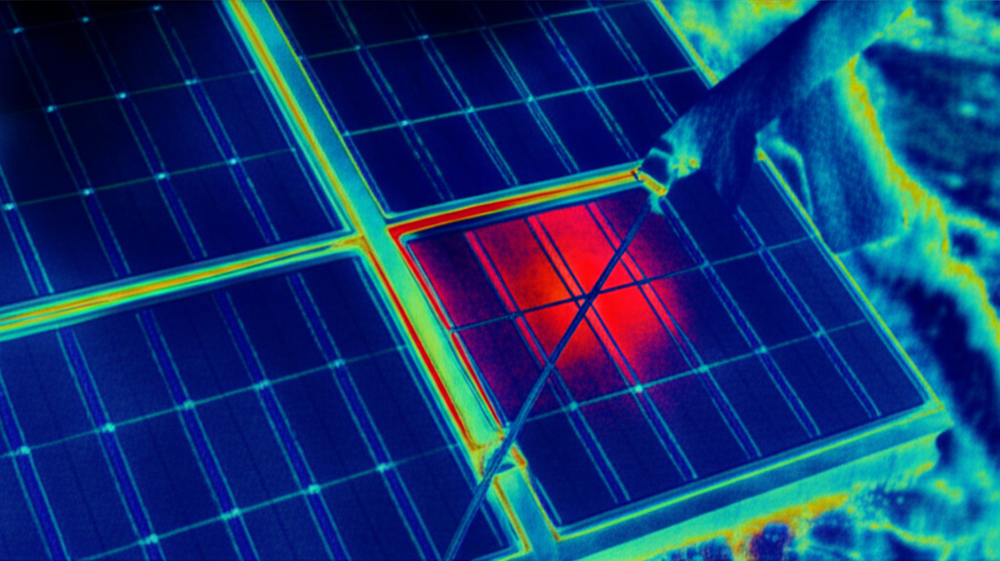

O&M — הכנסה חוזרת + שמירה על ביצועים
TM Energy — מרץ 2026
הגנה על ההשקעה + שביעות רצון לקוחות
PPA = אנחנו מפסידים כסף על כל שעת downtime. ניטור = כסף.
לקוח שרואה חיסכון בזמן אמת = לקוח שמפנה חברים. דו"חות חודשיים = אמון.
MRR מ-O&M גדל עם כל התקנה. 20 לקוחות × ฿3K = ฿60K/חודש פסיבי.
Hot spots, arc faults, earth faults — זיהוי מוקדם מונע שריפה. באי = מערכת חילוץ רחוקה.
| סוג התראה | חומרה | זמן תגובה | פעולה |
|---|---|---|---|
| 🔴 Inverter Fault | קריטי | 4 שעות | בדיקה בשטח, החלפה אם צריך |
| 🔴 Communication Loss | קריטי | 4 שעות | בדיקת dongle, WiFi, 4G |
| 🟠 Performance Drop > 20% | גבוה | 24 שעות | אבחון: הצללה? לכלוך? תקלה? |
| 🟠 String Imbalance > 10% | גבוה | 24 שעות | בדיקת פאנל/כבל ספציפי |
| 🟡 Grid Outage Detected | בינוני | תיעוד | לוג לדו"ח חודשי. לא בשליטתנו. |
| 🟡 Panel Degradation > 2%/yr | בינוני | שבוע | IV test, בדיקה פיזית, RMA |
| 🟢 Scheduled Cleaning Due | נמוך | שבוע | תיאום ביקור ניקוי |
| 🟢 Firmware Update Available | נמוך | שבועיים | עדכון OTA / ביקור |
฿1,500/חודש
מתאים: וילות קטנות (5-10kWp)
฿3,000/חודש
מתאים: רזורטים, עסקים (20-50kWp)
฿5,000/חודש
מתאים: PPA, מערכות גדולות (50kWp+)
| תדירות | פעולה | פירוט | זמן |
|---|---|---|---|
| רבעוני | ניקוי פאנלים | מים מופחתי מינרלים (DI water) + מגב רך. קריטי בטרופי — אבק, עלים, ציפורים. | 2-4 שעות |
| חצי-שנתי | בדיקה חשמלית | MC4 חיבורים, DC isolators, AC breakers, earthing resistance (<5Ω). | 3-4 שעות |
| שנתי | Thermal imaging | מצלמת FLIR — זיהוי hot spots, חיבורים רופפים, תאים פגומים. | 2 שעות |
| שנתי | IV Curve test | בדיקת ביצועי סטרינגים מול מפרט יצרן. זיהוי degradation. | 4 שעות |
| שנתי | בדיקת קונסטרוקציה | ברגים, קלאמפים, קורוזיה (salt air!). הידוק + החלפה. | 2 שעות |
| לפי צורך | Firmware update | אינוורטר, dongle. OTA אם אפשר, ביקור אם לא. | 30 דקות |
| אחרי סערה | בדיקת נזקים | בדיקה ויזואלית + חשמלית אחרי מונסון / סערת ברקים. | 2-3 שעות |

בעיה #1 באי. MC4 מתחמצנים, ברגים חולידים, rails מאבדים ציפוי. פתרון: SS316 + anti-oxidant paste + בדיקה חצי-שנתית.
גקונים נכנסים לאינוורטר (חם!). נמלים בנות קולוניות בתוך junction boxes. פתרון: mesh screens + insect repellent paste.
Koh Phangan = אזור ברקים. SPD נשרפים, אינוורטרים פוגעים. פתרון: SPD Type I+II, בדיקה אחרי כל סערה, מלאי חלפים.
עצי דקל, עלים, פירות על פאנלים. מצמצמים ייצור 10-20%. פתרון: ניקוי רבעוני + גיזום עצים.
רוחות חזקות, גשמים כבדים, הצפות. פתרון: עיגון חזק (wind zone 2), drainage, waterproof junction boxes.
35°C+ = ירידת ביצועים 10-15%. אינוורטר derating. פתרון: אוורור, הצללת אינוורטר, oversizing 10%.
1. ייצור kWh — יומי, שבועי, חודשי, מצטבר
2. חיסכון כספי — ฿ חסכו vs תעריף PEA
3. CO2 נמנע — טונות (שיווקי)
4. Performance Ratio — בפועל vs תיאורטי
5. Uptime — % זמינות המערכת
6. תקלות — רשימה + סטטוס טיפול
7. תחזוקה שבוצעה — ניקוי, בדיקות
8. המלצות — שדרוגים, שיפורים
דו"ח = הוכחה שההשקעה משתלמת. "ראה, חסכת ฿25K החודש." → שביעות רצון → הפניות.
דו"ח = שקיפות. "הנה כמה ייצרנו, הנה החיוב." → אמון → חידוש חוזה.
דו"ח = marketing. "הנה תוצאות אמיתיות." → case study → לידים חדשים.
| פריט | כמות | עלות | הערה |
|---|---|---|---|
| פאנלים (580W) | 4 | ฿12K | 2 × RMA loan |
| אינוורטר 10kW | 1 | ฿30K | Loan unit |
| Smart Dongle 4G | 2 | ฿4K | תקשורת backup |
| MC4 זוגות | 20 | ฿2K | |
| SPD Type II DC | 4 | ฿4K | אחרי ברקים |
| SPD Type I+II AC | 2 | ฿3K | |
| DC Isolator 32A | 2 | ฿2K | |
| Cable 4mm² PV1-F | 100m | ฿3K | |
| Fuses + holders | 10 | ฿1K | |
| סה"כ מלאי | ฿61K |
מחסן באי: שטח אחסון 20m² (יבש, מוצל)
ספק Bangkok: BayWa / Bangkok Solar — הזמנה → 2-3 ימים
משלוח לאי: Raja Ferry 2.5 שעות + pickup
סה"כ אספקה: 3-5 ימי עבודה
| תרחיש | לקוחות | חבילה ממוצעת | MRR | ARR |
|---|---|---|---|---|
| שנה 1 — סוף | 10 | ฿2,500 | ฿25K | ฿300K |
| שנה 2 — סוף | 25 | ฿3,000 | ฿75K | ฿900K |
| שנה 3 — סוף | 50 | ฿3,000 | ฿150K | ฿1.8M |
Hot spot detection. ฿15K. חובה לבדיקות שנתיות.
Seaward PV200. ฿45K. בדיקת ביצועי פאנלים vs מפרט.
Voc, Isc, continuity, insulation. ฿12K. כלי יומיומי.
מערכת ניקוי מים מופחתי מינרלים. ฿8K. לא משאיר כתמים.
צילום, סקר, בדיקה ויזואלית מרחוק. ฿35K.
MC4 crimper, torque wrench, cable stripper, safety gear. ฿15K.